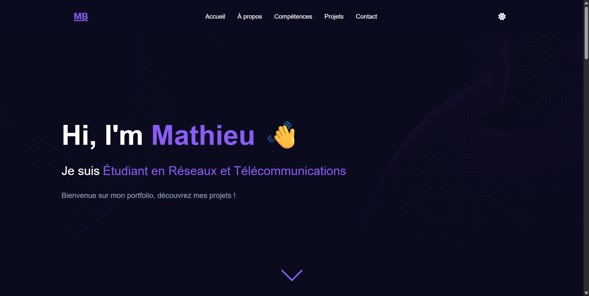

SAÉ 14
Se présenter sur Internet
Objectif et problématique professionnelle
Le professionnel R&T doit se présenter sur Internet, tout en mesurant l’importance et la portée des contenus qu’il diffuse (e-réputation, séparation vie privée/vie publique...). L’identité numérique professionnelle joue un rôle crucial dans la carrière : recherche d’emploi, présentation sur intranet d’entreprise, réseau professionnel, etc.
Projet réalisé
Création de mon portfolio web :
- Site personnel contenant une page d’accueil dynamique
- Présentation de mon parcours, compétences et projets
- Formulaire de contact avec protection CAPTCHA
- Design responsive en dark/light mode
- Animation de texte, effets de survol, ambiance visuelle unique
Compétences ciblées
- Créer des outils et applications informatiques pour les R&T
- Adapter la forme et le fond à un public professionnel
- Comprendre l’impact de son identité numérique
Apprentissages critiques
- AC13.01 | Utiliser un système informatique et ses outils
- AC13.04 | Connaître l’architecture et les technologies d’un site Web
Ressources mobilisées
- R1.06 | Architecture des systèmes numériques et informatiques
- R1.08 | Bases des systèmes d’exploitation
- R1.09 | Introduction aux technologies Web
- R1.10 | Anglais technique 1
- R1.11 | Expression-Culture-Communication Professionnelles
- R1.12 | Projet Personnel et Professionnel
- R1.15 | Gestion de projet 1
Preuves associées
- Capture de la page d’accueil : 
- Code source (extrait) : section d’introduction :
<h1 class="main-title fade-in">Hi, I'm <span class="highlight">Mathieu</span></h1>
<p class="welcome-text fade-in">Bienvenue sur mon portfolio, découvrez mes projets !</p>